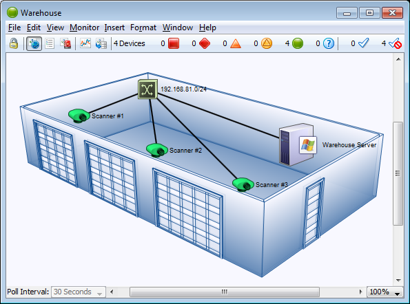

Adding Background Images To Your Map
You can place a background image on a map so that it appears behind the devices,
icons, and links on the map. All image file formats supported for custom icons can be used.
- You might use a background image containing a floor plan
of an office, and move the items on the map to show the locations of each
device in the office.
- You might use an image containing a street map of a city
or topographic map of a county or state.
The figure below shows a map after placing an image in the
background.
To place a background image in your map:
- Drag an image file from a desktop folder to the map window.
or
-
From the Appearance section of the Map Settings
window, available from the Edit menu, choose Background.
The Background pane appears, showing the current background image, if there
is one.
- Click to select Use background image.

Map with background image.
Tips for Using Background Images
Image size
The background image retains its height and width, and is not scaled (stretched
or shrunk) when you resize the window. If the background image is smaller
than the current window size, the image will be centered in the map, and the
map's background color will show around the edges. If a large image is placed,
its dimensions determine the full size of the window.
Image contrast and brightness
Contrasty images may make it difficult to see the devices and links against
the background. To make the image more suitable as a background image, you
may use a graphics program to increase the brightness and/or decrease its
contrast before placing it in a map. We regularly use GraphicConverter, an
inexpensive shareware graphics program from http://www.lemkesoft.com,
to do this task. It has a Brightness/Contrast adjustment facility to simplify
this task.
Be aware of image file size
Large images consume large amounts of memory and slow InterMapper's redrawing
of the window, especially when viewed over a remote connection. You should
balance the image quality against the size of the map. Larger maps may look
better, but they may consume large amounts of memory.
Note:
Use of a compressed image file format such as JPG does not necessarily
translate into less memory use.
Use contrast and compression to reduce image
file size
Decreasing contrast can decrease the size of an image, so that decreasing
the contrast as described above may help decrease the size of the background
image as well. Use compressed formats, such as JPG and GIF, to further decrease
the overall size of the image file.